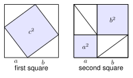

2.2 The Pythagorean Theorem and Its Converse
- Name the legs and the hypotenuse of a right triangle
- Use the Pythagorean theorem to find a missing side
- Recognize Pythagorean triples
- Decide if a triangle is right, acute, or obtuse from its side lengths
Warm-Up
1. Simplify 75.
25 · 3 = 53
2. Find 82 + 152.
64 + 225 = 289
3. Solve x2 + 36 = 100.
x2 = 64, so x = 8
2.2.1Parts of a Right Triangle
- The legs are the two sides that form the right angle.
- The hypotenuse is the side opposite the right angle. It is the longest side.

The legs touch the right angle. They are PQ and QR, so the legs are PQ and QR.
The hypotenuse is across from Q. It is PR.
PR is the longest because it is the hypotenuse.
2.2.2The Pythagorean Theorem
- Pythagorean theorem: in a right triangle, a2 + b2 = c2.
- a and b are the legs. c is the hypotenuse.
- It works for right triangles only.


Take two big squares with the same side length a + b. In each one, place four copies of the same right triangle.
In the first square, the space left over is one tilted square with area c2. In the second square, the space left over is two squares with areas a2 and b2.
Both big squares have the same area. Both have four triangles. So what is left over must match: c2 = a2 + b2.
2.2.3Finding a Missing Side
- Step 1: draw the triangle. Mark the hypotenuse.
- Step 2: write a2 + b2 = c2 and put in the numbers.
- Step 3: solve. Take the square root at the end.
52 + 72 = c2
25 + 49 = c2 so c2 = 74
c = 74. Since 74 = 2 · 37, it does not simplify. c ≈ 8.6.
82 + b2 = 122
64 + b2 = 144 so b2 = 80
b = 80 = 16 · 5 = 45 ≈ 8.9.
x2 + (x + 7)2 = 132
x2 + x2 + 14x + 49 = 169 so 2x2 + 14x − 120 = 0
Divide by 2: x2 + 7x − 60 = 0. Factor: (x + 12)(x − 5) = 0. So x = 5 or x = −12.
A length cannot be negative. The legs are 5 and 12. Check: 25 + 144 = 169.
a. Find the hypotenuse when the legs are 4 and 9.
c = 16 + 81 = 97 ≈ 9.8
b. Find the other leg when the hypotenuse is 11 and one leg is 6.
b = 121 − 36 = 85 ≈ 9.2
2.2.4Pythagorean Triples
- A Pythagorean triple is three whole numbers with a2 + b2 = c2.
- Common triples: 3-4-5, 5-12-13, 8-15-17, 7-24-25.
- Multiplying a triple by any number gives a new triple.
Is it a multiple of a triple? 15 = 3 · 5 and 36 = 3 · 12. So it is 3 · (5, 12, 13).
The hypotenuse is 3 · 13 = 39. Check: 225 + 1296 = 1521 = 392.
25 = 5 · 5 and 15 = 5 · 3. It is 5 · (3, 4, 5). The other leg is 5 · 4 = 20.
2.2.5The Converse: Is It a Right Triangle?
- If a2 + b2 = c2, the triangle is right.
- If a2 + b2 > c2, the triangle is acute.
- If a2 + b2 < c2, the triangle is obtuse.
- To make a triangle, the two short sides must add to more than the longest side.
The longest side is 25. Test: 72 + 242 = 49 + 576 = 625.
252 = 625. They are equal, so the triangle is a right triangle.
First: 5 + 6 = 11 > 8, so it is a triangle.
52 + 62 = 25 + 36 = 61 and 82 = 64.
61 < 64, so the triangle is obtuse.

This triangle looks like a right triangle. The picture only suggests it. The numbers show the truth: the largest angle is about 93°, so it is obtuse. Always check with numbers, as in Example 7.
3 + 4 = 7, and 7 < 9. The short sides are not longer than the long side.
So no, these lengths cannot make a triangle.
a. 9, 40, 41
81 + 1600 = 1681 = 412. Right.
b. 6, 7, 10
36 + 49 = 85 < 100. Obtuse.
1. The hypotenuse is the longest side of a right triangle. The legs form the right angle.
2. In a right triangle, a2 + b2 = c2, where c is the hypotenuse.
3. 5-12-13 is a Pythagorean triple.
4. If a2 + b2 = c2, the triangle is right. If a2 + b2 < c2, it is obtuse. If a2 + b2 > c2, it is acute.
Practice
Use the figure.
1. Name the legs of the triangle.
CA and CB
2. Name the hypotenuse.
AB
Find the hypotenuse. Give the exact answer, then round to the nearest tenth when it is not a whole number.
3. Legs 8 and 15
c = 17
4. Legs 7 and 9
130 ≈ 11.4
5. Legs 2 and 6
40 = 210 ≈ 6.3
Find the missing leg. Give the exact answer, then round to the nearest tenth when it is not a whole number.
6. Hypotenuse 20, leg 12
b = 16
7. Hypotenuse 9, leg 4
65 ≈ 8.1
8. Hypotenuse 25, leg 24
b = 7
Pythagorean triples. Find the missing side with no calculator.
9. Legs 12 and 16. Find c.
4 · (3, 4, 5), so c = 20
10. Hypotenuse 34, leg 30. Find the other leg.
2 · (8, 15, 17), so the leg is 16
11. Hypotenuse 51, leg 45. Find the other leg.
3 · (8, 15, 17), so the leg is 24
Solve for x. Show the equation.
12. The legs are x and x + 1. The hypotenuse is 5. Find x.
x2 + (x+1)2 = 25, 2x2 + 2x − 24 = 0, (x + 4)(x − 3) = 0, x = 3 (legs 3 and 4)
13. The legs are 6 and x. The hypotenuse is x + 2. Find x and the hypotenuse.
36 + x2 = x2 + 4x + 4, so 4x = 32 and x = 8. The hypotenuse is 10.
Right, acute, or obtuse? Check that it is a triangle first.
14. 9, 12, 15
81 + 144 = 225. Right.
15. 8, 10, 12
64 + 100 = 164 > 144. Acute.
16. 7, 8, 12
49 + 64 = 113 < 144. Obtuse.
17. 20, 21, 29
400 + 441 = 841. Right.
18. Can 4, 5, and 10 make a triangle? Explain.
4 + 5 = 9 < 10. No.
19. Can 6, 8, and 13 make a triangle? Explain.
6 + 8 = 14 > 13. Yes.
What does the figure show?

20. The triangle is drawn to scale. Moses says it is a right triangle because it looks like one. Is he right? Use the side lengths to decide.
62 + 72 = 85 and 92 = 81. They are not equal, so it is not right. 85 > 81, so it is acute.
Find the mistake.
21. Samir tests the sides 6, 7, and 10. He writes 62 + 72 = 85, and 85 ≠ 100, so "the triangle is acute." What is his mistake? What is the correct answer?
85 < 100 means the triangle is obtuse. If a2 + b2 is smaller than c2, the triangle is obtuse.
Test practice
22. A right triangle has legs of length 9 inches and 12 inches. Esperanza wants to find the length of the hypotenuse. Which is the length of the hypotenuse?
A. 7.5 inches
B. 15 inches ← correct
C. 21 inches
D. 225 inches
23. The side lengths of a triangle are 11 centimeters, 12 centimeters, and 16 centimeters. Which statement about the triangle is true?
A. It is a right triangle.
B. It is an acute triangle. ← correct
C. It is an obtuse triangle.
D. It is not a triangle.
Challenge
24. A square has side 6. Find its diagonal. Then show that the diagonal of any square with side s is s2.
d2 = 62 + 62 = 72, so d = 62. For side s: d2 = s2 + s2 = 2s2, so d = s2.
25. For whole numbers m > n, the numbers m2 − n2, 2mn, and m2 + n2 form a Pythagorean triple. Find the triple when m = 5 and n = 2. Check it.
21, 20, 29. Check: 441 + 400 = 841 = 292.